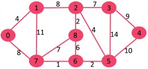

Krushkal's Algorithm
Problem Statement : Kruskal's algorithm to find the minimum cost spanning tree uses the greedy approach.
What is Minimum Spanning Tree?
Given a connected and undirected graph, a spanning tree of that graph is a subgraph that is a tree and connects all the vertices together. A single graph can have many different spanning trees. A minimum spanning tree (MST) or minimum weight spanning tree for a weighted, connected and undirected graph is a spanning tree with weight less than or equal to the weight of every other spanning tree. The weight of a spanning tree is the sum of weights given to each edge of the spanning tree.
How many edges does a minimum spanning tree has?
A minimum spanning tree has (V – 1) edges where V is the number of vertices in the given graph.
Algorithm 1. Sort all the edges in non-decreasing order of their weight. 2. Pick the smallest edge. Check if it forms a cycle with the spanning tree formed so far. If cycle is not formed, include this edge. Else, discard it. 3. Repeat step#2 until there are (V-1) edges in the spanning tree.
The algorithm is a Greedy Algorithm. The Greedy Choice is to pick the smallest weight edge that does not cause a cycle in the MST constructed so far. Let us understand it with an example: Consider the below input graph.

The graph contains 9 vertices and 14 edges. So, the minimum spanning tree formed will be having (9 – 1) = 8 edges.
After sorting: Weight Src Dest 1 7 6 2 8 2 2 6 5 4 0 1 4 2 5 6 8 6 7 2 3 7 7 8 8 0 7 8 1 2 9 3 4 10 5 4 11 1 7 14 3 5